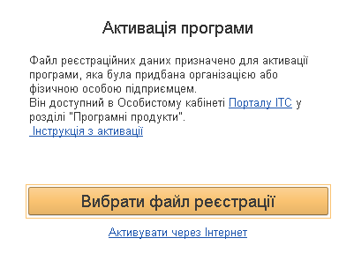

Активація програми
Автоматична активація (за наявності доступу до Інтернету)
Активація за допомогою файлу реєстрації
Якщо ваш комп'ютер підключено до Інтернету і у вас є обліковий запис на Порталі ІТС, то краще використовувати цей спосіб.
У діалозі «Активація програми» вкажіть логін та пароль для вашого облікового запису на Порталі ІТС (https://portal.bas-soft.eu/) та натисніть «Активувати через Інтернет».
Програма підключиться до порталу та отримає список поставок програми, які зареєстровані в особистому кабінеті ІТС. Якщо серед них знайдеться реєстрація організації, для якої ведеться облік в інформаційній базі, буде виконано активацію програми.
Якщо потрібної реєстрації немає, то буде видано повідомлення про помилку. У цьому випадку потрібно вказати логін та пароль від того облікового запису Порталу ІТС, на який зареєстрована програма, або виконати активацію за допомогою файлу реєстрації.
Якщо доступу до Інтернету немає, можна активувати програму за допомогою файлу активації. Файл активації можна завантажити в розділі «Програмні продукти» Порталу ІТС.

Для активації потрібно натиснути кнопку «Вибрати файл реєстрації» та вказати файл, який ви завантажили з Порталу ІТС. Файлом реєстрації є zip-архів з реєстраційними даними. Якщо файл реєстрації містить відомості організації, для якої ведеться облік в інформаційній базі, то буде виконано активацію програми. Якщо файл реєстрації містить відомості про іншу організацію, то буде видано повідомлення про помилку.